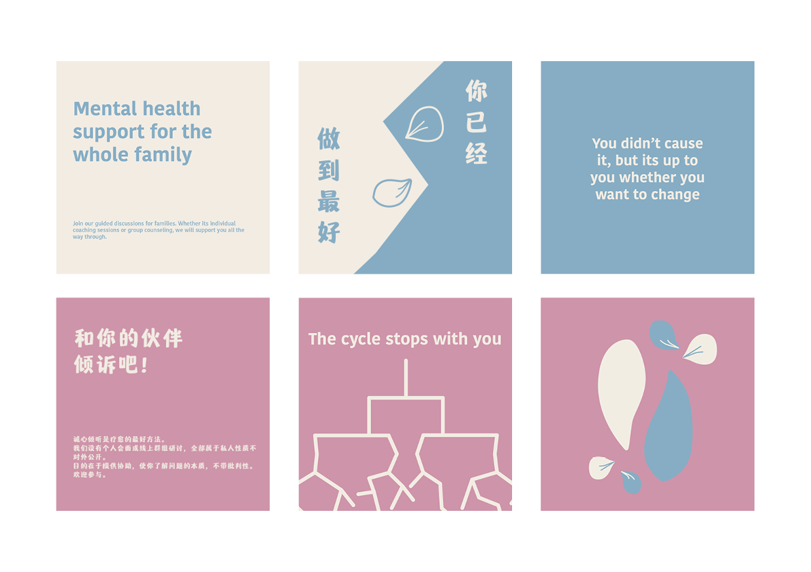

Activism Flexible Branding System
Branding, Graphic Design | 2026 | University Project


Background
This project explores how branding can support social change movements by building a safe and approachable community space for difficult conversations. Through research, strategic positioning and visual design, I developed a flexible brand system that encourages openness, connection, and conversation.
| Role | Tools |
|---|---|
| Brand Designer | Adobe Illustrator |
| Brand Researcher | Adobe Indesign |
| Adobe Premiere Pro | |
| Team | Timeline |
| Me! | March - June 2026 |
How might we create a visual brand identity that encourages conversations about intergenerational trauma within the Asian immigrant community?
Research
Research explored intergenerational trauma, cultural stigma, and existing support initiatives.
| Key Insights | Implications |
|---|---|
| Silence is often mistaken as a sign of strength | Branding should create a safe space for open conversations |
| Existing initiatives focus on healing, not conversation | Branding should encourage dialogue and community support |
| Social media creates accessible support for young people | Branding should leverage digital platforms to reach younger audiences |


I produced low-fidelity wireframes for:
- Login and onboarding flows
- AI scribe interfaces across four products
- Header and navigation structures
- Mobile menu interactions

Particularly important aspects that were considered:
- Reducing visible clutter with collapsible actions and icons
- Colour changes for cohesion
Reflection
Visual Consistency
This project taught me design systems’ role in creating consistent and scalable experiences across different products. It also highlights the importance of a clean design in healthcare products.
Pattern Audit and Competitor Analysis
I also gained the experience of conducting pattern audits and competitor analysis, learning how they can help with creating more cohesive and unique designs.